| 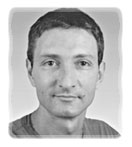
por Yves Ceccone Sobre el Author: Formado como fotógrafo y migrado hacia la infografía, no ha dado descanso al ratón desde entonces. Contenidos: |
Resumen:
Sketch es un progama de dibujo vectorial, lo que quiere decir que representa las figuras, por ejemplo un círculo, como una fórmula matemática, por oposición a programas como The GIMP, de tipo bitmap, que usan puntos (pixeles) para ello. Las ventajas de una representación vectorial frente a una de tipo bitmap son que produce ficheros de menor tamaño y que el gráfico puede ser considerablemente ampliado sin las pérdidas de calidad que se producen con las imágenes tipo bitmap. No es posible representar una fotografía en modo vectorial, por lo que se ha hecho posible integrar imágenes bitmap dentro de skethc (eps, jpg, gif, tiff, ...) así como importar otros formatos gráficos (xfig, illustrator, corel, ...). Sin ninguna dificultad, es posible leer y modificar gráficos creados con Illustrator 6 en un Mac, o con Illustrator 7 sobre un PC. Sketch también es capaz de escribir en el formato usado por Illustrator (.ai). Este artículo pretende revisar las herramientas básicas de Sketch, aplicadas a la creación de una representación de un disco flexible, y explicando alguno de los efectos especiales más notables posibles gracias al dibujo vectorial. This article reviews the principle tools of Sketch, details the creation of a drawing of a floppy disk, and explains some "special" effects worthy of the big shots of vector drawing.
En la dirección web de Sketch podrás encontrar las fuentes, así como los binarios ya compilados y las librerías necesarias en formato RPM. (No fui capaz de compilar el programa, y aparentemente no soy el único ;-)). La versión usada en este artículo es la 0.6.2, sobre RedHat 6.0.
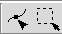
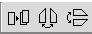
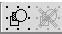
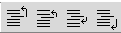
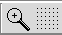
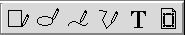
Estas ventanas aparecen mediante comandos del menú, o con combinacones de teclas.
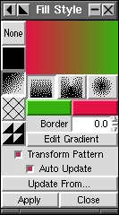
Estilo de rellenado : Se puede rellenar una figura con un fondo uniforme, gradado (lineal o circularmente), cruces, con una imagen (obtenida de un fichero), o no rellenarla en absoluto.
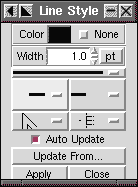
Estilo de líneas : Para elegir el color de una línea, su grosor, y cómo de puntiagudos queremos sus vértices y extremos.
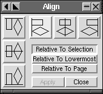
Alinear : Alinear varios objetos (según los lados o el dentro) relativamente, respecto a la página, o respecto a una selección.
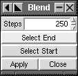
Fundir : Después de seleccionar dos objetos de formas y colores diferentes y crear gradaciones entre ellos, seleccionando el número de pasos intermedios.
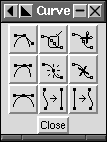
Curvas : Añadir un punto, borrarlo, transformar una curva en dos, cambiar la tangente ...
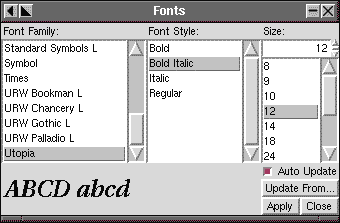
Selector de fuentes
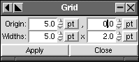
Rejillas : Modificar la rejilla.
Puede transformarse en una rejilla a la que ajustar los elementos.
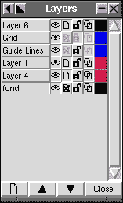
Planos : El uso de planos facilita la creación de gráficos complejos,
permitiendo restringir los cambios a un soo plano, cambiar el plano de un
objeto, reordenar los planos, ...
Las rejillas y la guías pueden ser controladas con esta ventana.
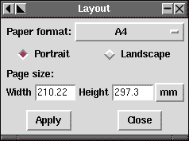
Diseño de la página
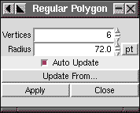
Polígonos regulares
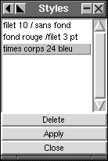
Estilos : Crear un estilo (colores, anchos de líneas) y aplicarlo a varios objetos sin tener que aplicar los cambios uno a uno con las herramientas específicas.
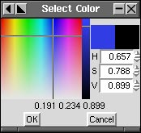
Selección de colores
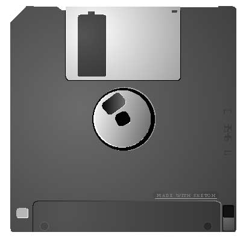
Los bordes escalonados que se ven, y especialmente en las partes circulares, son un efecto de la pantalla. Este efecto disminuye al ampliar, y desaparece completamente al imprimir. Puedes descargar la imagen del disco flexible en formato sketch desde aquí, en caso necesario.
Al arrancar Sketc, crea un documento vacío, en tamaño A4 por defecto.
"F5" abre la paleta de planos, y para hacer aparecer la rejilla, es necesario
asegurarse de que el ojo junto a la etiqueta "Grid" está abierto.
opens the Layer palette, and to make the grid appear you must ensure
that the eye beside "Grid" is open.
Y para modificar el espaciado de la rejilla:
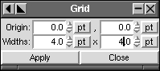
El cuerpo (Body)
Se activa el fijado a la rejilla ("snap-to"), y se dibuja un cuadrado del
tamaño aproximado de la página con la herramienta de dibujo de rectangulos
(manteniendo presionada la tecla "ctrl" para forzar el dibujo de un cuadrado),
empezando en un punto de la rejilla, y acabando en otro.
Después de ampliar la esquina superior izquierda, y usando las herramientas
de edición en el punto de esa esquina, se empuja hacia adentro, para redondear
todas las esquinas a la vez:
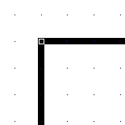 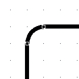
En esa misma esquina, añadimos líneas de gúia 5 unidades a partir de la esquina en las direcciones vertical y horizontal (arrastrando las líneas respectivas):
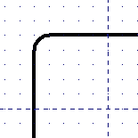 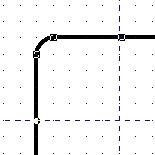 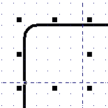 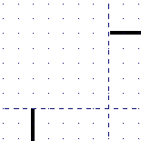
Seguimos bloqueando el plano "Guide Lines" (con el padlock)
Convertimos la línea en una curva de Bézier, usando el menú
Curves -> Convert to Curve
Abrimos la paleta correspondiente a Windows -> Curves Commands
Y, con la herramienta de edición, marcamos en una de las líneas de guía o
intersecciones del rectángulo, con lo que aparecerá un punto. Ahora marcamos
con "Cut Curves" en la parte superior derecha de la paleta de curvas.
Y hacemos lo mismo con las otras intersecciones
Entunces usamos Curves -> Split Béziers para separarlas en dos partes
y seleccionar (con la herramienta de selección) la parte con la esquina y
borrarla.
Se pueden unir los extremos, pero en este caso no es útil.
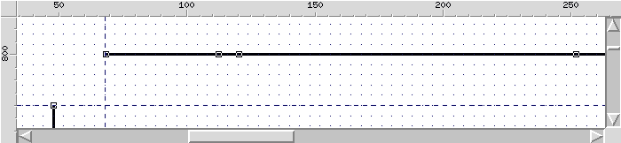
Con la herramienta "Insert Nodes" (en el centro de la paleta de Curvas), añadimos 3 puntos a la línea.
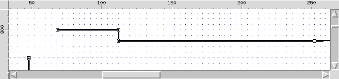
Y ahora, usando la herramienta de edición para mover esos puntos, y con la ayuda del modo "ajustar a la rejilla", se puede fácilmente adaptar la forma de la línea a las propias necesidades.
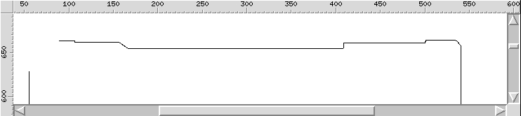
... Y el disco flexible ya está complatamente delineado ...
Abrimos las paletas de estilo de rellenado y estilo de líneas
Y, con el contorno del disco seleccionado, marcamos en "None" en la paleta
de estilo de línea, para eliminar el grosor del contorno.
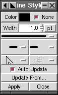 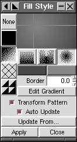 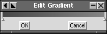
En Estilo de rellenado, marcamos la primera columna con el tercer
botón (gradiente) y entonces, el tercer tipo de gradiente (circular), y acto
seguido marcamos en Editar Gradiente. También se pueden cambiar los colores
del gradiene con los dos botones situados debajo de los tipos de gradientes.
En la caja de diálogo de Editar Gradiente se puede modificar el color de un
punto del gradiente, añadir un nuevo punto y, por supuesto, mover los puntos.
Con un gradiente ciercular, se puede seleccionar el centro del gradiente usando
el ratón.
Una vez que el gradiente ha sido creado y selecionada la figura sobre la que
se quiere usar, marcamos en Aplicar:
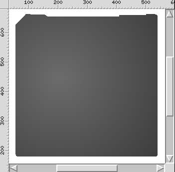
En este momento podemos bloquear el plano "Body", y crear un nuevo plano con
el icono correspondiente, abajo a la derecha en la paleta de planos.
Este nuevo plano está destinado a contener el centro del disco flexible.
Por defecto, cada plano recién creado se coloca sobre los demás, aunque
puedes modificar el nivel de un plano con las flechas situadas en la parte
inferior de la palete de planos.
El eje (axis)
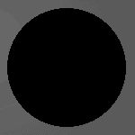 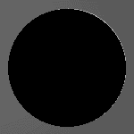
Dibujamos un círculo en el centro del disco flexible (usando la caja de
alineamiento para centrarlo y lo rellenamos de negro.
Duplicamos el círculo y lo rellenamos de color gris muy suave, colocandolo
bajo el primero mediante el icono "place underneath" de la paleta de
herramientas.
Para conseguir el efecto de iluminación desde la izquierda, es necesario
desplazar el círculo claro hacia la derecha, deformándolo ligeramente
moviendo los pequeños recuadros situados a su alrededor que se ven cuando
está seleccionado.
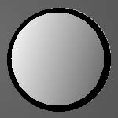 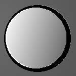
Duplicamos nuevamente el círculo negro, reduciéndolo usando el ratón junto
con la tecla "ctrl" (para conservar su forma).
Lo rellenamos con un gradiente lineal que vaya desde un gris claro hasta uno
más intenso, duplicándolo y colocándolo por debajo, rellenado de blanco,
elongado y desplazado hacia la izquierda.
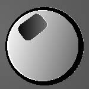 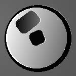
Para los dos pequeños cortes usaremos rectángulos con las esquinas redondeadas, según el método usado para el cuerpo del disco, rellenando uno de ellos de negro, y el otro con un gradiente, añadiendo las reflexiones que le darán volumen.
La tapa deslizante (Slider)
Obviamente, crearemos un nuevo plano para esta parte ...
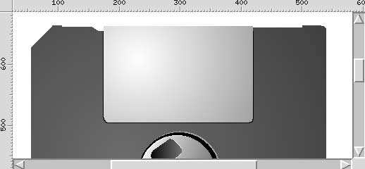
La tapa metálica consta de un rectángulo co los bordes redondeados tan sólo
en su parte inferior, hecho cortando la mitad superior de la figura, tal y como
vimos anteriormente, con la herramienta "Cut curve" de la paleta de curvas.
Para dar un efecto de metal, rellenaremos el objeto con un gradiente circular
desde gris claro a gris oscuro, desplazando el centro del gradiente hacia la
izquierda.
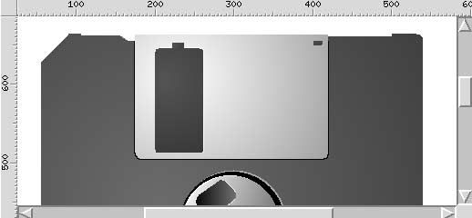
Y para dibujar el corte de la tapa, debemos usar el mismo gris que usamos en
el cuerpo del disco al rellenar los rectángulos de esta parte.
Y, por supuesto, duplicaremos estos elementos, colocándolos bajo los originales
y rellenándolos de gris claro/blanco, para dar el mismo efecto de separación.
Haremos una copia de la cubierta deslizante, que transformaremos para crear el hueco y sus efectos luminosos, dibujando la ranura mediante un rectángulo negro.
Los restantes elementos se componen de semi círculos, círculos deformados y
rectángulos con las esquinas redondeadas.
Un semicírculo es fácil de hacer seleccinando un círculo en modo de edición
y desplazando el punto que aparece.
La parte de abajo y el texto
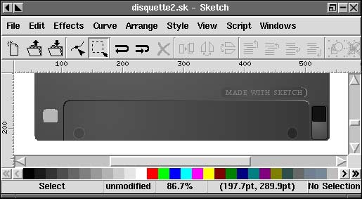
Usamos el mismo método que para los otros elementos, rectánculos,
círculos ...
Para el texto, marcamos con la herramienta de texto el lugar donde queremos
colocarlo, y con la paleta de textos, seleccionamos la fuente, el color, etc.
La región alrededor del texto es un rectánculo con las esquinas
redondeadas.
El texto vertical de la derecha se hizo a través del menú
edit -> create -> LCD text, en el que debemos escribir el texto, el estilo, y
después aplicarlo, aunque también podemos cambiar el tamaño, el color ...
y rotarlo 90° haciendo un doble click en el objeto, lo que hace aparecer unas
flechas que permiten llevar a cabo la rotación. Para ello debemos usar las
flechas en las esquinas, puesto que las otras se usan para deformar el objeto.
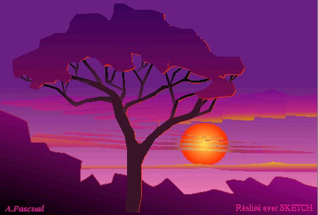 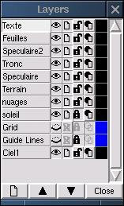
Una contribución de André Pascual. Se ve claramente la estructura del dibujo en la ventana de Planos [y mucho mejor aún si sabes que feuilles=hojas, speculaire=reflexión especular, tronc=tronco, nuages=nubes, soleil=sol, ciel=cielo].
Este efecto se realiza con las herramientas de fusión (effect -> blend), en
las que se puede pensar como un gradiente para formas.
La idea se ve claramente a la derecha, donde un cuadrado se transforma en un
círculo paso a paso, a la vez que cambia su color en cada paso.
Se deben seleccionar dos objetos, y con la caja de diálogo de fusiones
("blend") se elige el número de pasos para la fusión. Cuantos más pasos
hagamos, más suave y realista será el efeto. Con 200 pasos, se puede crear
la apariencia de una esfera a partir de un gran círculo coloreado, y un
círculo menor situado sobre el.
Para el ejemplo mostrado ariba, he usado 3 efectos de fundido juntos (6 objetos,
2 a 2). El fundido sólo funciona con dos objetos, y el resultado no puede
ser combinado con ningún otro elemento. Pero es posible modificarlo
haciéndolo en varias partes, para cambiar los pasos del color.
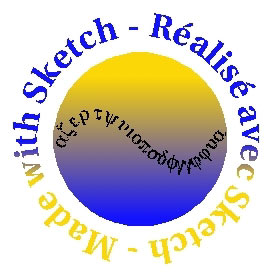
Para lograr este efecto basta con selecciona una figura y un texto, usando el
menú Effects -> create path text,
el texto seguirá automáticamente la
curva, sin importar su forma.
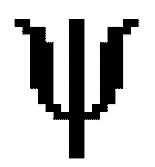 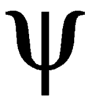
Vectorizar texto (mostramos una "y" según las fuentes de símbolos)
es transformarlo en un elemento, esto es, en una curva vectorizada, modificable
moviendo sus puntos con ayuda de la caja de diálogo "Curves".
Para ello, una vez que el texto ha sido seleccionado, hay que usar el menú
Curve -> Convert to Curves, y convertirlo en editable, desagrupándolo con el
menú Arrange -> Ungroup.
Esto puede ser útil si te ves obligado a proporcionar un gráfico a alguien
que no dispone de las fuentes que has usado: se puede vectorizar el texto y
esa persona será capaz de usar el gráfico sin problemas
Para poder vectorizar una fuente, Sketch debe encontrar el fichero de fuentes
correspondiente (.pfb) para lo que es necesario colocar el fichero en el
directorio /usr/lib/sketch-0.6.2/Ressources/Fontmetrics.
Con el menu Edit -> Create -> Load image (o con el icono situado más a la izquierda en el menú), es posible importar una imagen en formato bitmap, a la que es posible redimensionar.
Mediante el menú File -> Insert Document, se puede insertar en un gráfico un fichero creado con Sketch, Corel, Svg, ... o con Illustrator como en el ejemplo que mostramos.
El cropping se realiza con el menú Effects -> Create Mask Group, sobre un rectángulo definido en el original. image.
Frecuentemente se compara The GIMP con Photoshop (con buenos resultados), y en ese sentido puede útil pensar en Sketch como el The GIMP de los programas de dibujo vectorial, comparable a Illustrator, Freehand, o Corel Draw... Dentro de unos límites.
|
Contactar con el equipo de LinuFocus
© Yves Ceccone LinuxFocus 1999 |
Translation information:
|
1999-11-15, generated by lfparser version 0.6